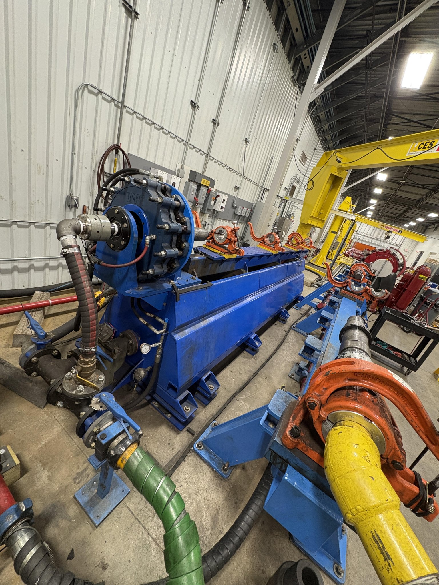
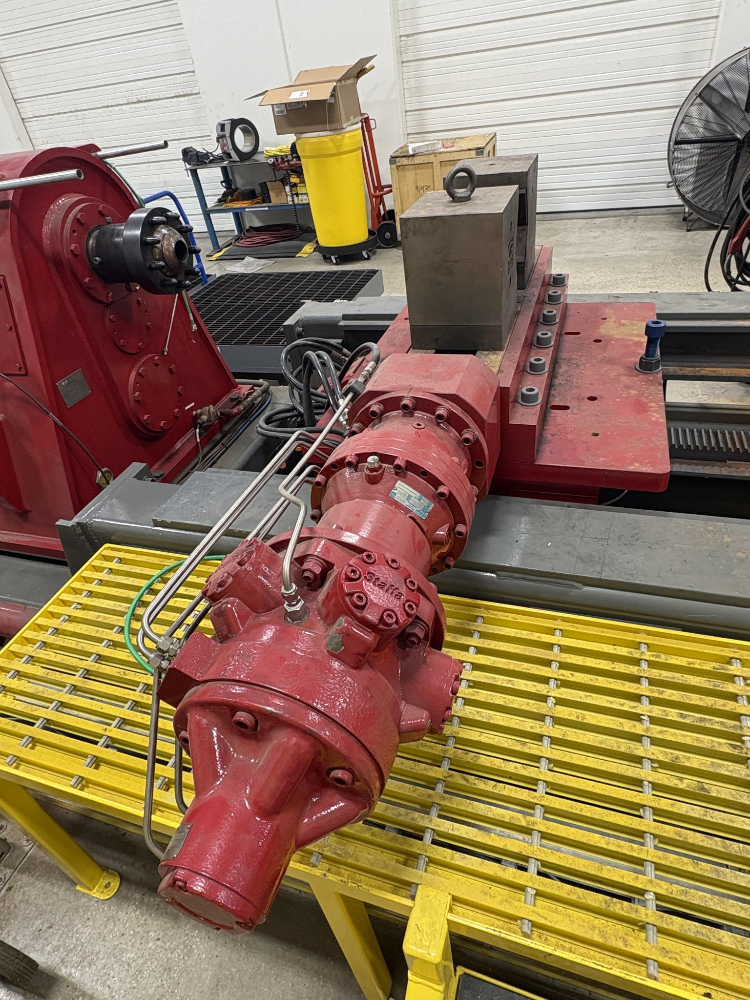
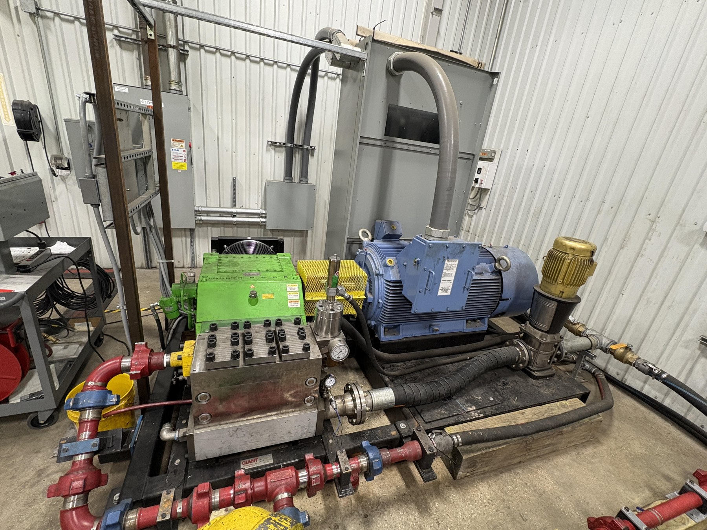
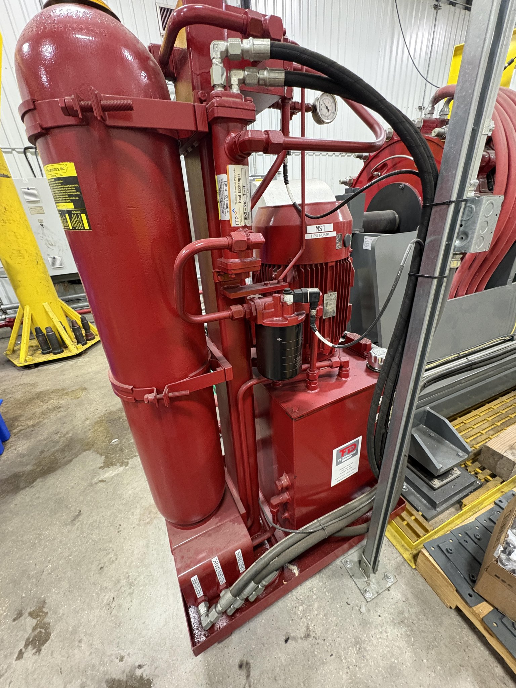
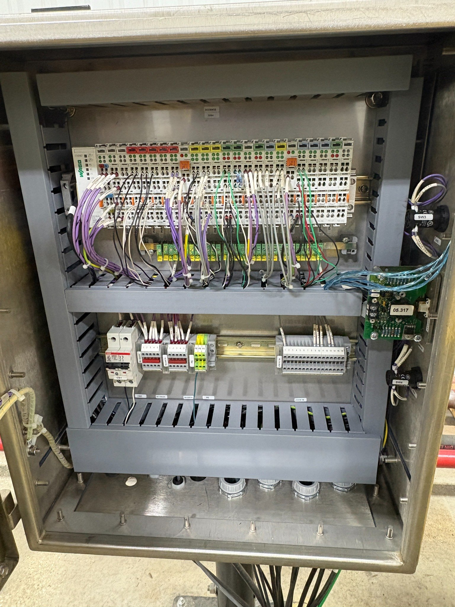
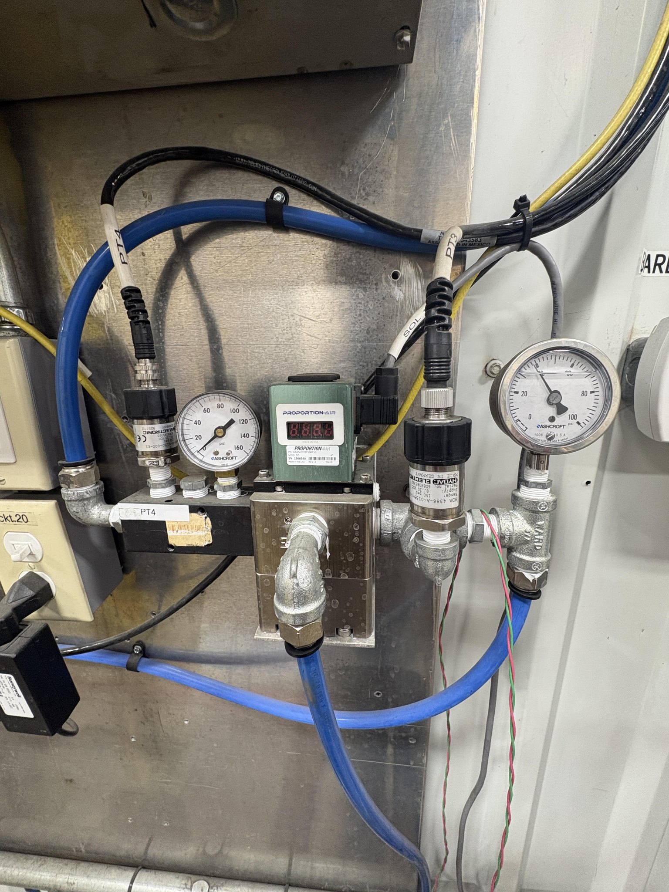

Engineering internship project at NOV focused on understanding,
documenting, testing, and supporting the modernization of a
coiled tubing dynamometer test system.
During my engineering internship at NOV, I worked on the
modernization of an existing coiled tubing dynamometer test
system.
The project required developing a system-level understanding of
the equipment, documenting the existing mechanical and
instrumentation architecture, identifying modernization
opportunities, and supporting physical system testing.

Overall dyno test system used during the modernization project.
Understanding the Existing System
One of the first parts of the project involved understanding how
the existing mechanical, hydraulic, instrumentation, and control
systems interacted.
This system-level understanding was necessary before meaningful
modernization recommendations or updated engineering
documentation could be developed.

Mechanical hardware within the existing dyno system.
Fluid System & Test Infrastructure
The dyno stand relies on a larger fluid system containing pumps,
motors, piping, hoses, valves, gauges, and supporting equipment.
Understanding the flow path and associated equipment was important
when reviewing the system architecture and preparing for
operational testing.

Pump, motor, piping, and fluid-system hardware.

Supporting fluid-system equipment.
Instrumentation & Controls
A major part of the modernization effort involved understanding
how field instrumentation connected into the existing control
and data-acquisition architecture.
I worked with instrumentation and I/O documentation while reviewing
how measurement devices, wiring, control hardware, and system
signals were organized.

Existing electrical and I/O hardware.

Pressure measurement and instrumentation hardware.
Engineering Documentation
The modernization project required translating the physical
system into clear engineering documentation that could be used
to understand the current configuration and plan future
improvements.
Project Deliverables
System overview and architecture documentation
Updated P&ID information
Instrumentation and I/O documentation
Controls concept development
Existing-system gap analysis
Engineering modernization recommendations
Testing & Validation
I also participated in operating the dyno stand and running fluid
through the system at different BPM rates.
Data collected during these test runs was reviewed and analyzed
to understand how the system responded under different operating
conditions and to identify performance trends.
Test Process
Configure the test system for operation
Run the system at selected pump rates
Monitor instrumentation during operation
Record system data
Compare behavior across operating conditions
Analyze results for engineering evaluation
System-Level Engineering
One of the most valuable aspects of the project was working with
a real industrial system in which mechanical equipment,
instrumentation, controls, fluid systems, testing, and technical
documentation all had to work together.
Rather than analyzing one isolated component, the project required
understanding how changes to one part of the system could affect
other subsystems and the overall test process.
Engineering Areas
System Engineering:
System Architecture,
Gap Analysis,
Modernization Planning,
Technical Documentation
Testing:
Test Stand Operation,
Pump-Rate Testing,
Data Collection,
Performance Analysis
Team & Internship Experience
Worked alongside fellow interns and engineers throughout the
modernization project, gaining experience collaborating across
mechanical, controls, instrumentation, and operations teams.